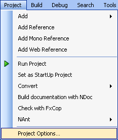
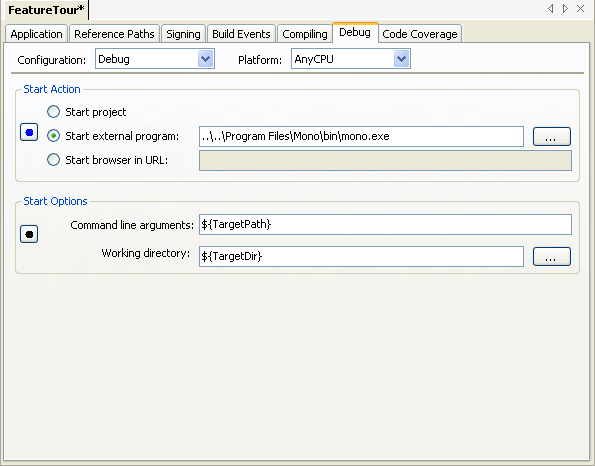
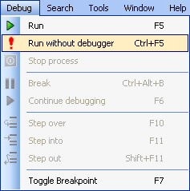
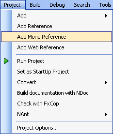
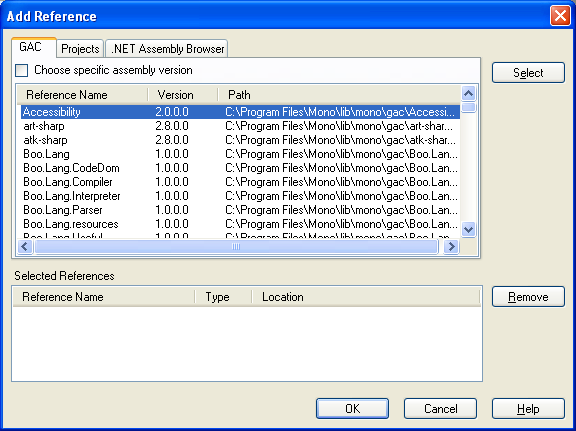

SharpDevelop has the ability to compile your code against previous versions of Microsoft's .NET Framework, Microsoft's Compact Framework or Mono (an open source implementation of the .NET Framework sponsored by Novell) if they are installed. Currently it is only possible to target different frameworks with C# or VB.NET applications.
From the Project menu select Project Options.

Open the Compiling tab and select the desired framework from the Target Framework drop down list.
Once the target framework has been selected you will get code completion for that particular framework.
When targeting a previous framework version there are a few limitations that you should be aware of. The Forms Designer will generate code and resources that are .NET 2.0 specific. Resource files (.resx) will use .NET 2.0 types when compiled into your assembly.
Whilst Microsoft's .NET Framework only runs on Windows, the Mono framework supports Linux, Mac OS X, Sun Solaris, BSD and Microsoft Windows. Mono has its own implementation of Microsoft's System.Windows.Forms, which is not quite 100% feature complete, at least for .NET 2.0, but is still under active development. Another alternative is to use Gtk# or Glade# to create a cross platform GUI application. SharpDevelop provides Gtk# and Glade# project and file templates. To design the UI you can use the Glade designer that ships with Mono.
To target Mono, open the project's Compiling options and select either Mono 1.1 or Mono 2.0 from the Target Framework drop down list. With Mono 1.1 selected Mono's Mcs compiler will be used. With Mono 2.0 selected Mono's Gmcs compiler will be used.
In order to run your application under Mono, the project needs to be configured. From the project options, open the Debug tab, switch the Start Action to Start external program and enter the path to the Mono executable, and finally set the Command line arguments to ${TargetPath}.

To run your application under Mono, from the Debug menu select Run without debugger.

Code built using Mono's compilers cannot be debugged on Windows. The Mono compilers create their own open source debugging symbols binary (.mdb) which SharpDevelop's debugger does not support. There is also no Mono debugger available for Windows. In order to debug a Mono application it needs to be built using the Microsoft's C# compiler.
SharpDevelop supports assemblies that reside in Mono's GAC. From the Project menu select Add Mono Reference.

This will open the Add Reference dialog box where a Mono GAC entry can be selected and added to the project.

There is no support for the generation of Makefiles that would be required to build the source code on non-Microsoft platforms, so other tools would need to be used.